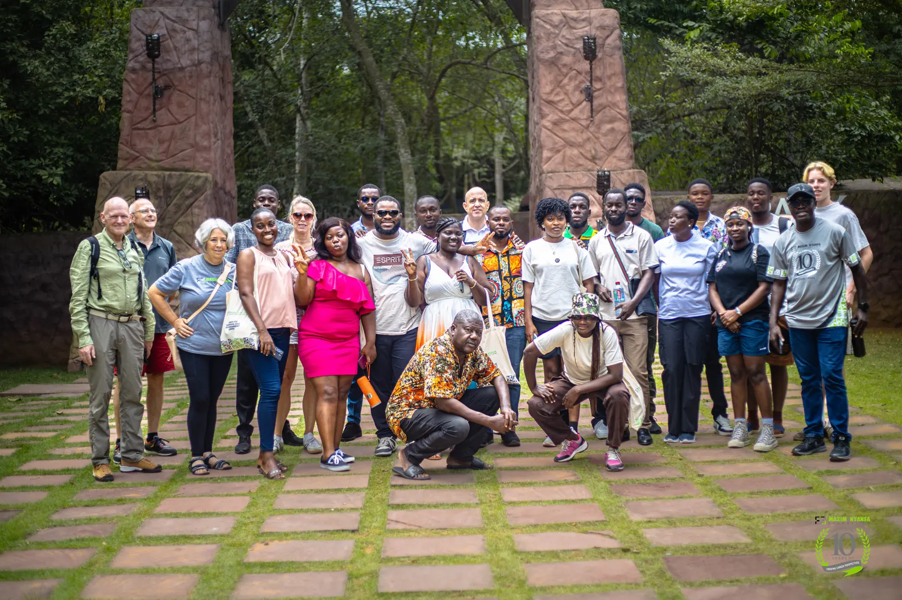

Learning Transformation
ICT labs for schools, teacher training, hardware and software, the Computer4Schools campaign and the Skuuni school-management platform.
Established in Ghana in 2016 to create career perspectives for young Africans through information technology.

“To create career perspectives for young people with the use of information technology.”
“Investing in young Africans, empowering them with relevant IT skills to drive personal, market, and innovative growth.”
A name that puts learning at the centre of everything the Foundation does.
The logo is a classic Ghanaian Adinkra symbol that literally means “climbing the right tree”: he who works for a good cause may expect the help of others. The Foundation’s Dutch sister organisation carries the same name, Climbing The Right Tree.
A bi-cultural European–African approach, raising funds and mobilising volunteers to train young Africans.
ICT labs for schools, teacher training, hardware and software, the Computer4Schools campaign and the Skuuni school-management platform.
Practical bootcamps with soft skills, career coaching, a real-life project and EXIN certification exams. Tracks include Cyber Security.
Figures from maximnyansa.com counters. They cover the whole Foundation, not the 2026 bootcamp.